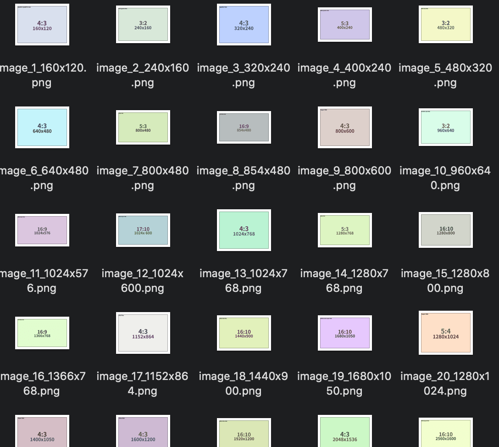
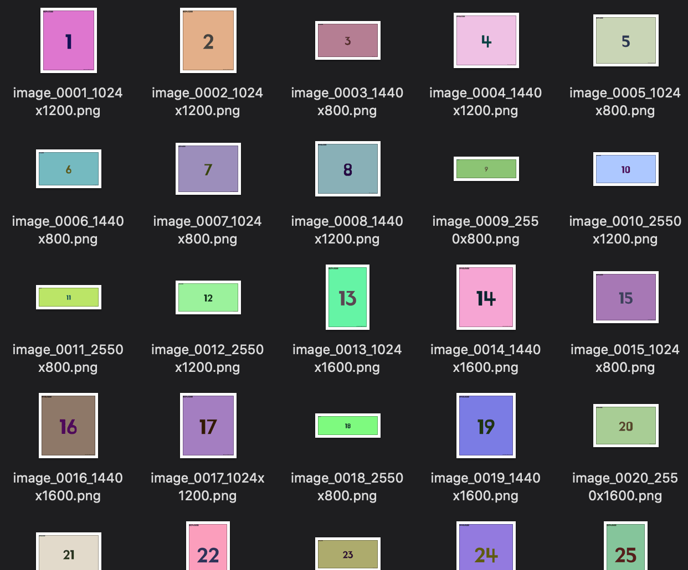
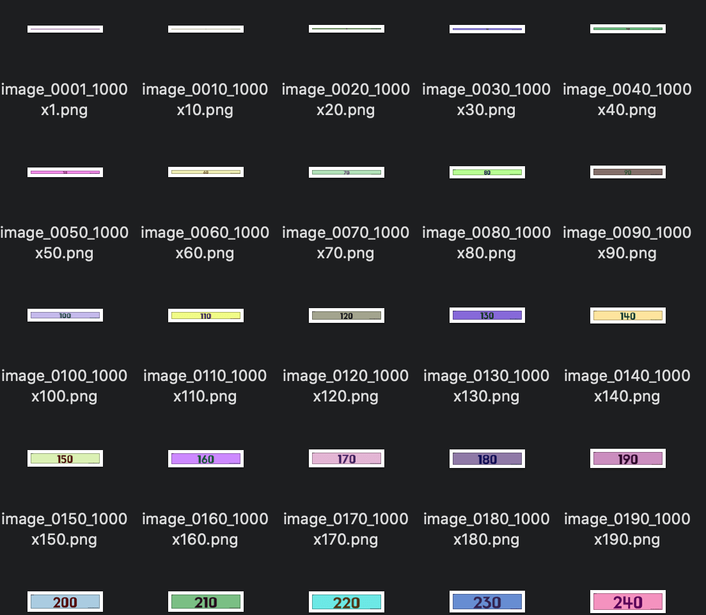
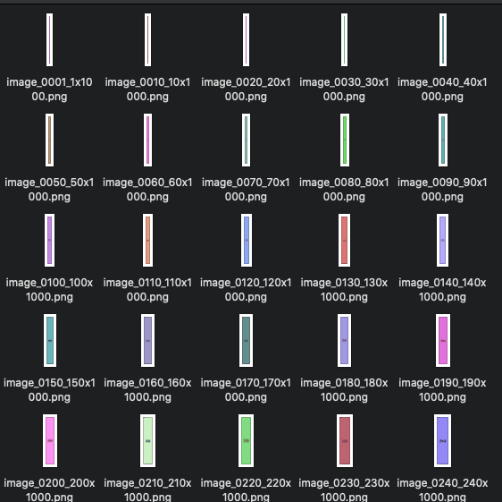

개발 테스트용 이미지 다운로드
기능 테스트를 하다 보면 이미지 소스들이 필요한 경우가 있습니다. 때로는 예제앱에 이미지를 포함하고 싶을때 적당한 이미지를 선택하는것도 은근 신경쓰이는 일 입니다. 필요한데 아무리 검색해도 찾을 수 없어서 그냥 만든 테스트용 이미지들을 공유합니다.
직접 만든 이미지 묶음들
파일형식은 Png이며, image_{number}_{width}x{height}.png 형식의 파일이름으로 저장 되어 있습니다. 의견 주시면 또 다른 세트도 추가해보겠습니다.
상용 해상도 47가지 (qqVGA ~ FUHD)
Download : all_ratio.zip

랜덤 사이즈로 1000개의 이미지 (1 ~ 1000)
Download : random1000.zip
폭(1024, 1440, 2550), 높이(800, 1200, 1600) 조합으로 만들어진 랜덤크기

폭 1000px 고정에, 높이가 증가하는 이미지들
Download : ratioVarHeight.zip

높이 1000px 고정이고 폭이 증가하는 이미지들
Download : ratioVarWidth.zip

다양한 기능을 제공하는 유용한 사이트들
여러장의 사진 이미지가 필요할 때
- 이미지 공유 사이트 unsplash를 기반으로 zip으로 묶어서 한번에 다운로드.
- 한번에 원하는 크기의 이미지를 최대 30장을 묶어서 내려받을 수 있습니다.
- 필요한 이미지 갯수, width/height, quality를 지정 가능하고, 원한다면 특정 이미지를 검색해서 모을 수 있습니다.
- 모든 사진은 무료 로 다운로드 하여 사용할 수 있습니다.
- 심지어 상업적 및 비상업적 목적 모두 사용도 가능합니다. 이미지 자체를 판매는 금지!.
- 샘플앱에 넣어서 사용하는 것도 가능 하겠네요. :~)
url로 요청하면 이미지를 만들어주는 페이지들
더미 이미지가 필요할 때
https://www.websiteplanet.com/webtools/dummy-images-generator

- width x height, 배경색, 글자색, format을 지정하면 바로 이미지로 다운로드 가능.
Search
Get more post